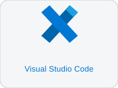

Software installatie
Installeer alle tools die je nodig hebt voordat je begint met programmeren. Volg de stappen in volgorde.
- Visual Studio Code — onze code-editor voor HTML, CSS en JavaScript
- VS Code extensions — handige plugins die je werk versnellen

Visual Studio Code
Gratis code-editor van Microsoft — Windows, macOS en Linux
Visual Studio Code (afgekort VS Code) is de code-editor die we gebruiken voor dit vak. Het is gratis, open-source en heeft ingebouwde ondersteuning voor HTML, CSS en JavaScript.
Installatiestappen
Open je browser en surf naar code.visualstudio.com. Klik op de grote downloadknop — de website detecteert je besturingssysteem automatisch.
Windows: download het .exe bestand (Stable Build).
macOS: download het .dmg bestand.
Linux: download het .deb of .rpm pakket.
Windows: dubbelklik op het .exe bestand en volg de wizard. Vink zeker aan:
✓ "Add to PATH"
✓ "Add 'Open with Code' action to Windows Explorer"
macOS: sleep de app naar de Applications map.
Linux: installeer via de package manager of dubbelklik op het pakket.
Open VS Code vanuit het startmenu of de applicatiemap. Je ziet het welkomstscherm. VS Code is klaar voor gebruik.
VS Code bevat Emmet standaard. Typ een ! in een leeg .html bestand en druk op Tab — de volledige HTML-basisstructuur wordt gegenereerd. Je hoeft niets extra te installeren voor Emmet.
VS Code Extensions
Plugins die je workflow versnellen en fouten verminderen
Extensions installeer je via het paneel aan de linkerkant van VS Code (het blokjes-icoontje Ctrl+Shift+X / Cmd+Shift+X). Zoek op de naam en klik op Install.
Verplichte extensions
Start een lokale server die je HTML-pagina automatisch herlaadt telkens je een bestand opslaat. Klik rechtsonder op "Go Live" om te starten.
Zoek op: ritwickdey.liveserver
Voegt automatisch aanvulling toe voor alle HTML-tags en attributen. Typ een paar letters en kies uit de lijst.
Zoek op: abusaidm.html-snippets
Code-aanvulling voor moderne JavaScript. Shortcuts voor console.log, arrow functions, forEach en meer.
Zoek op: xabikos.javascriptsnippets
Formatteert automatisch je HTML, CSS en JS code bij het opslaan. Houdt je code netjes en consistent zonder na te denken.
Zoek op: esbenp.prettier-vscode
Hoe installeer je een extension?
Druk op Ctrl+Shift+X (Windows/Linux) of Cmd+Shift+X (macOS), of klik op het blokjes-icoontje in de linkerbalk.
Typ de naam of de extension-id (bv. ritwickdey.liveserver) in het zoekveld bovenaan het paneel.
Klik op de blauwe knop Install naast de extension. De installatie duurt enkele seconden. Je hoeft VS Code niet te herstarten.
Open een .html bestand in VS Code. Rechtsonder in de statusbalk zie je Go Live. Klik erop — je browser opent de pagina op http://127.0.0.1:5500. Telkens je opslaat (Ctrl+S) herlaadt de browser automatisch.
Open VS Code, klik op File → Open Folder, maak een nieuwe map aan voor je project en maak je eerste index.html bestand aan. Vergeet niet op Go Live te klikken om Live Server te starten.